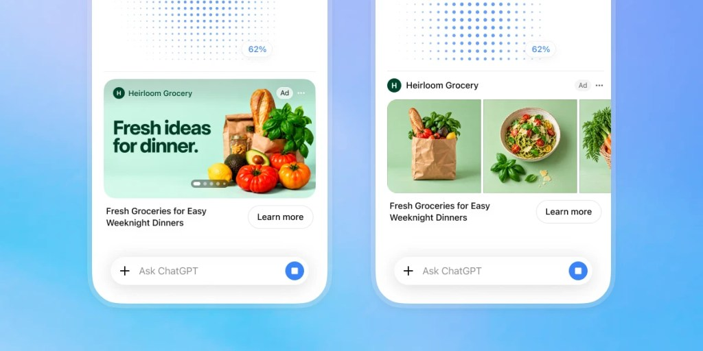

Executive Summary
이 글은 오픈AI가 2026년 10월 5일 내놓은 챗GPT 광고 발표를 읽는다. 이용자가 그림을 만들어 달라고 하면 그 결과가 나오는 화면 옆에 광고가 붙는다. 시범 운영은 이달 안에 미국에서 일부 광고주를 상대로 시작하고, 챗GPT가 주마다 닿는 사람은 12억 명이다. 오픈AI는 광고가 만들어지는 그림과 떨어져 있고, 답변 내용에 영향을 주지 않으며, 외부 파트너가 비공개 대화를 열람하지도 않는다고 못 박았다.
그러면 광고 효과는 무엇으로 측정하는가. 발표가 이름을 댄 회사들은 광고를 누른 사건과 그 뒤에 일어난 구매를 이어 붙이는 쪽이고, 이 작업에는 대화가 들어가지 않는다. 개인정보 처리방침 개정을 다룬 보도에 따르면 광고주가 보낸 구매 기록은 오픈AI로 들어오고, 쿠키 번호와 기기 번호는 마케팅 업체와 공유된다. 대화는 머물고 번호가 움직인다.
1절부터 3절까지는 오픈AI 발표문과 이를 전한 보도에 적힌 사실이다. 4절은 그 사실을 데이터를 다루는 사람의 눈으로 다시 읽은 이 글의 해석이다.
주요 수치
아래 네 숫자는 챗GPT의 주간 이용자 수, 오픈AI가 밝힌 광고 매출, 대화를 지키겠다는 약속, 광고주 한 곳이 내놓은 성과를 차례로 가리킨다.
출처: 테크크런치 보도(2026-10-05), PPC Land 보도(2026-10-05).
12억 명
챗GPT 주간 이용자
시범은 미국부터다. 기존 챗GPT 광고는 무료·Go 요금제에만 붙는다
10억 달러
챗GPT 광고 연환산 매출
8월 31일 발표. 월 매출에 12를 곱한 값이라 한 해 실적이 아니다
0곳
비공개 대화를 보는 외부 파트너
오픈AI 설명이다. 그러면 적합성은 무엇을 보고 판정하는가
15.3%
광고주 한 곳이 보고한 획득 비용 절감
웨이트워처스가 자사 검색광고 평균과 비교한 값. 표본과 기간은 비공개다
그림 옆에 붙는 광고
오픈AI가 2026년 10월 5일 챗GPT에 새 광고 형식을 열었다. 이용자가 그림을 만들어 달라고 하면 결과가 나오는 화면 옆에 이미지와 한 줄 제목, "Learn more" 단추가 붙은 광고가 뜬다. 오픈AI 설명으로는 제품에서 얻을 영감이나 쓰임새, 그 제품으로 할 수 있는 경험을 보여 주는 자리다.

위치가 발표문의 핵심이다. 광고는 "뚜렷하게 표시되고, 만들어지는 그림과 떨어져 있다". 생성된 그림 안에 상표가 섞여 들어가지 않고 답변 내용도 광고 때문에 달라지지 않는다는 것이 오픈AI가 그은 선이다.
시범 운영은 이달 안에 미국에서 일부 광고주를 상대로 시작한다. 발표가 잡은 범위는 거기까지다. 다만 챗GPT 광고 자체는 이미 국경을 넘어 있다. 2월 9일 미국에서 켜진 뒤 6월 6일 영국, 6월 22일 일본과 한국으로 이어졌고 광고를 집행할 수 있는 나라는 63곳이다. 한국 이용자가 보는 챗GPT 화면에도 광고는 벌써 붙어 있고, 이번에 더해지는 것은 그 광고가 뜨는 자리다.
오픈AI가 같은 글에서 챗GPT가 주마다 12억 명에게 닿는다고 적었으니 확대됐을 때의 모수는 그 수다. 광고를 보는 쪽은 무료 요금제와 Go 요금제 이용자다. 오픈AI 도움말은 플러스·프로·기업·교육 계정에 광고가 없고 18세 미만으로 판정된 계정과 임시 채팅에도 광고가 붙지 않는다고 적는다. 10월 발표문은 광고 형식까지만 다루고 요금제 구분은 도움말에 맡긴다. 도움말은 광고 전반을 그 두 요금제로 한정하고 있다.
무료 요금제에는 광고를 끄는 선택지가 따로 있는데, 이것이 이번 발표와 맞물린다. 도움말에 따르면 무료 이용자가 광고 없는 쪽으로 바꾸면 메시지 한도가 줄고 일부 도구를 쓸 수 없게 되며, 못 쓰게 되는 도구의 예로 적힌 것이 이미지 생성과 딥리서치다. PPC Land가 4월에 같은 도움말을 읽었을 때 문서는 이용자가 이미지를 만든 뒤에는 광고가 뜨지 않는다고 적었고, 광고 없는 설정을 고른 무료 이용자는 이미지 생성을 쓸 수 없다고 적었다. 그러니까 이번 발표는 광고가 비어 있던 자리를 채우는 쪽이다. 그리고 그 자리의 광고를 무료 요금제에서 피하는 길은 그림 만들기 자체를 내려놓는 것이다.
오픈AI가 왜 광고를 서두르는지는 숫자를 보면 안다. 오픈AI는 8월 31일 챗GPT 광고가 출시 200일이 되기 전에 연환산 매출 10억 달러에 이르렀다고 발표했다. 구글 애드워즈가 같은 고지에 닿는 데 4년이 걸렸다는 비교가 함께 돌았다. 다만 계산법을 봐야 한다. 연환산은 그 시점의 한 달 치 매출에 12를 곱한 값이라, 역산하면 월 8,300만 달러쯤이다. 한 해 동안 실제로 들어온 돈이 아니다. 같은 방식으로 잰 수치가 3월 26일에는 1억 달러였으니 다섯 달 남짓 만에 열 배가 됐다. 광고주 유지율이나 평균 집행액, 수익성은 공개되지 않았다.
대화 대신 클릭에 붙는 표식이 효과를 측정한다
측정 쪽 발표가 왜 하필 지금 몰려 나왔는지는 가격이 설명한다. 2월 9일 시범이 시작될 때 노출 1,000회 값은 60달러였고 최소 집행액은 20만에서 25만 달러였다. 4월 중순에는 노출 값이 25달러까지 내려가고 최소 집행액도 5만 달러가 됐다. 디지데이에 인용된 한 실무자는 노출이 얼마짜리인지 바깥에서 검증해 주기 전에는 노출에 기여를 매기는 일을 정당화하기 어렵다고 했다. 오픈AI 광고 솔루션을 이끄는 데이비드 듀건이 독립 검증을 두고 자연스러운 다음 단계라고 말한 것이 6월 30일이다. 광고가 붙는 양은 그사이에도 늘었다. 센서타워 집계로 미국 모바일 앱의 이용자당 시간당 광고 수가 4월 대비 8월에 163% 올랐다.
이번 발표의 절반은 광고 형식이고 나머지 절반은 측정이다. 오픈AI가 이름을 댄 회사를 역할별로 세면 이렇다. 광고주 쪽 데이터를 챗GPT 광고와 이어 주는 연결 업체가 하이터치·테알리움·라이브램프 셋, 클릭을 뒤에 일어난 행동에 이어 붙이는 귀인 업체가 앱스플라이어·트리플웨일·어드저스트·DV록커복스·노스빔·브랜치·싱귤러·코바치·에어브리지·텐진 열, 깔때기 전체를 보는 고급 측정이 포스파·메저드·INCRMNTAL 셋, 지역을 갈라 증분을 측정하는 실험이 하우스·메저드·워크매직 셋이다. 메저드가 두 칸에 겹치니 이름으로 세면 열여덟 곳이다.
귀인이 어떻게 되는지를 한 겹만 풀면 대화가 왜 필요 없는지가 보인다. 이용자가 광고를 누르는 순간 표식 하나가 함께 넘어가고, 그 표식이 광고주의 앱이나 웹사이트까지 따라간다. 거기서 설치나 구매가 일어나면 같은 표식으로 두 사건을 하나로 잇는다. 무엇을 그려 달라고 적었는지는 이 과정 어디에도 들어가지 않는다.
번호가 어디까지 오가는지는 오픈AI 개인정보 처리방침 개정을 다룬 보도에 적혀 있다. 서치엔진랜드와 이마케터가 전한 바로는 오픈AI는 광고 효과를 측정하려고 광고주로부터 구매 기록을 받고, 쿠키 번호와 기기 번호 같은 제한된 식별자를 마케팅 업체와 공유한다. 무료 요금제 이용자는 마케팅 쿠키가 기본으로 켜져 있고 설정에서 끌 수 있으며, 플러스와 기업 요금제는 애초에 대상이 아니다. 오픈AI 대변인은 대화와 비공개 이용자 콘텐츠가 광고주와 공유되지 않는다고 밝혔다.
두 설명은 서로 부딪치지 않는다. "대화를 광고주에게 넘기지 않는다"와 "아무 데이터도 오가지 않는다"는 다른 말이기 때문이다. 넘어가지 않는 쪽이 대화이고, 오가는 쪽은 식별자와 구매 기록이다.
▲ 발표문과 처리방침 보도에 적힌 데이터 항목을 이 글이 경계 기준으로 갈라 정리했다.
광고를 고르는 신호가 무엇인지는 오픈AI 도움말이 목록으로 적어 둔다. 지금 하고 있는 대화의 맥락과 의도, 광고의 랜딩 페이지와 제목과 문구, 그리고 광고주가 제공한 맥락 힌트와 타겟팅 선택이다. PPC Land 정리로는 이 맥락 힌트가 키워드가 아니라 광고그룹 단위로 걸리는 값이다. 개인화 광고를 켜면 여기에 광고와의 상호작용, 지난 대화와 기억이 더해진다. 끄면 현재 대화 스레드와 일반적인 위치·언어만 남는다. 유럽경제지역과 스위스에서는 개인화 광고가 처음부터 제공되지 않는다. 그림을 만들어 달라는 주문은 이 가운데 어느 칸에 들어가는가.
측정 결과는 벌써 숫자로 나와 있다. 발표문이 소개한 사례를 하나씩 보자. 웨이트워처스는 DV록커복스 집계로 획득 비용이 자사 검색광고 평균보다 15.3% 낮았다고 했고, 도스는 워크매직 실험에서 증분 구매의 67%가 새 고객에게서 나왔다고 했다. 포틀랜드 레더는 트리플웨일 집계로 챗GPT 광고를 타고 온 방문자의 93%가 처음 온 사람이었다고 했다. 셋 다 표본 크기와 기간, 집행액이 함께 공개되지 않았고, 오픈AI 자신도 증분 측정이 "아직 초기 단계"라고 적었다. 세 숫자가 재는 것도 서로 다르다. 첫째는 귀인된 비용을 어떤 기준값과 견준 것인데 그 기준값의 정의가 없고, 둘째는 증분의 구성비일 뿐 증분의 크기가 없으며, 셋째는 새 방문자의 비율이라, 광고가 없었어도 그들이 왔을지는 이 숫자로 가릴 수 없다.
측정의 단위인 클릭 자체에도 물음이 붙어 있다. 광고 검증 업체 트래픽가드는 9월 30일 챗GPT 광고 클릭 40,021건을 분석한 결과를 내놓으면서 광고주에 따라 무효 클릭 비율이 0.1%에서 34%까지 갈렸다고 했다. 호스팅·프록시·악성 IP에서 온 클릭이 3.34%로, 같은 광고주들의 구글 광고 0.92%보다 높았다. 다만 이 회사는 클릭 검증을 파는 쪽이고, 광고주는 익명 처리됐으며, 걸러 낸 클릭과 오픈AI가 실제로 과금한 클릭이 같은지는 자료에 없다. 비율을 그대로 받기는 어렵지만, 귀인이 올라서 있는 바닥은 보여 준다.
적합성을 판정하는 데이터는 발표에 없다
광고가 뜨면 안 되는 자리를 가리는 일을 광고 업계는 브랜드 적합성이라고 부른다. 오픈AI는 이번에 더블베리파이, 인터그럴 애드 사이언스 두 곳과 시범 평가를 함께 만들기로 했다. 조건이 한 줄 붙어 있다. 두 회사는 "통제된 시험 환경에서" 평가하며 "비공개 이용자 대화에 접근하지 않는다". 감정적으로 취약하거나 민감하거나 부적절한 대화에는 광고가 붙지 않게 막겠다는 것이 오픈AI가 내건 기준이다. 이 기준에는 공개된 몫도 있다. 도움말은 개인 건강과 정신건강, 정치처럼 민감하거나 규제받는 주제 근처에는 광고가 뜰 수 없고, 정치 광고는 아예 받지 않으며, 건강이나 금융 같은 업종은 엄격한 자격 심사를 통과한 광고주만 집행할 수 있다고 적는다.
여기서 칸이 하나 빈다. 대화를 보지 않는 검증사가 그러면 무엇을 보는지를 오픈AI는 밝히지 않았다. 광고주 쪽에는 자사 정책에 맞춰 특정 표현을 거르는 "네거티브 문구" 설정이 새로 열렸다는데, 어떤 광고주가 쓸 수 있는지도 문구를 몇 개까지 걸 수 있는지도 어떻게 일치를 판정하는지도 적혀 있지 않다. 오픈AI는 자동 검토와 사람 감독, 상시 감시로 대화가 광고를 붙여도 되는 자리인지 판단한다고만 밝혔다.
3.1맥락이 대화라면 검증사는 무엇을 보는가
더블베리파이 최고경영자 마크 자고르스키의 말이 문제를 가장 짧게 요약한다. 챗GPT에서는 "맥락이 페이지나 영상이 아니라 대화 자체로 정의된다"는 것이다. 그는 맥락이 한 대화 안에서도 계속 바뀌기 때문에 기존 매체와 다른 접근이 필요하다고 했다. 인터그럴 애드 사이언스 최고경영자 리디안 존스도 안전장치가 규모 위에서 일관되게 작동한다는 확신이 필요하다는 취지로 말했다. 그런데 검증사가 그 대화를 보지 않는다면 바뀌는 맥락은 무엇으로 좇는가. 두 사람 모두 그 이야기는 하지 않았다.
말 자체에도 규격이 생겼다. 미디어 평가 협의회는 2025년 10월 18일 '브랜드 안전'이라는 표현을 도메인이나 키워드만 보는 업체가 아니라 이미지·영상·음성 같은 콘텐츠를 실제로 분석하는 업체에만 쓰도록 제한했고, 유예 기간은 2026년 4월 18일에 끝났다. 인터그럴 애드 사이언스는 오픈AI 발표와 같은 날 선별된 광고주에게 챗GPT 광고 보고서를 제공하기 시작했다는 발표를 따로 냈는데, 그 발표문에도 오픈AI 발표문에도 이 인증을 받았다는 말이나 어떤 종류의 콘텐츠를 본다는 설명은 없다. 두 발표가 같은 프로그램을 두고 하는 말인지도 두 문서만 보고는 알 수 없다.
그림 생성 화면에서는 질문이 한 겹 더 붙는다. 적합성 등급이라는 말은 "페이지"가 한 줄짜리 그림 주문일 때 무엇을 뜻하는가. 만들어진 그림 자체를 평가하기는 하는가. 광고가 그림 옆에 붙는다는 사실만 확정돼 있고, 그 옆자리가 적절한지 판정하는 대상이 주문인지 그림인지 대화 전체인지는 열려 있다.
3.2한 회사가 양쪽 명단에 있다
명단을 다시 보면 겹치는 이름이 하나 더 있다. 귀인 업체 열 곳 가운데 DV록커복스가 더블베리파이 계열이고, 적합성을 독립 검증하는 두 곳 가운데 하나도 더블베리파이다. 광고 성과를 집계하는 쪽과 광고가 놓일 자리를 검증하는 쪽에 같은 이름이 들어가 있다는 뜻이다. 두 역할이 실제로 어떻게 분리되는지는 발표에 적혀 있지 않다.
검증하는 쪽이 어떤 회사인지도 최근에 바뀌었다. 인터그럴 애드 사이언스는 노바캡이 19억 달러에 사들여 비상장으로 돌렸고, 더블베리파이는 닐슨이 8월 6일 약 21억 5천만 달러에 인수하기로 합의했다. 한쪽은 사모펀드 아래로, 다른 한쪽은 시청률을 재는 회사 안으로 들어간다. 덧붙이면 인터그럴 애드 사이언스가 2025년 10월에 낸 자체 설문에서는 광고주의 75%가 AI로 만든 콘텐츠 옆에 자사 광고가 붙는 것을 원하지 않는다고 답했다. 벤더 자체 조사라는 단서는 붙지만, 이번 형식은 설계상 바로 그 자리에 광고를 놓는다.
같은 화면에 무엇을 띄울지 정하는 재량이 어디에 있는지는 한 달 전 사례가 보여 준다. 디인포메이션 보도로 오픈AI는 9월에 독립형 이미지·오디오 생성 도구 광고를 더는 받지 않기로 하고 광고 파트너들에게 알렸다. 공개 발표는 없었다. 올해 초 광고 시범에 참여해 아크로뱃 스튜디오와 파이어플라이를 알리던 어도비가 영향을 받았고, 어도비 미주 미디어 담당 더그 와이엇이 통보 사실을 확인했다. 영상 생성 제품 광고는 계속 받는다고 전해졌다. 적합성 판정과는 다른 사안이지만, 그 화면에 무엇이 뜰지를 정하는 칼자루가 한 곳에 있다는 점은 같다.
페블러스가 이 발표를 주목하는 이유
광고가 붙을 맥락은 그동안 페이지였고 검색어였고 영상이었다. 이번에 하나가 늘었다. 사람이 무엇을 그려 달라고 적었는가다.
검색어와 그림 주문은 성격이 다르다. 검색어는 이미 있는 것을 찾는 말이고, 그림 주문은 아직 없는 것을 만들어 달라는 말이다. "거실에 놓을 2인용 소파를 북유럽풍으로 그려 줘"는 찾는 문장이 아니라 만들려는 문장이고, 그래서 구매 의도에 더 가깝게 읽힌다. 광고가 하필 이 자리를 노린 까닭도 거기 있을 것이다.
그러면 이 신호를 누가 보관하고 누가 열람하는가. 공개된 답이 아예 없지는 않다. 설정의 광고 제어 화면에서 이용자는 자기가 본 광고 기록과 타겟팅에 쓰인 주제 목록을 열어 볼 수 있고, 그 데이터를 지울 수 있다. 지우면 30일 안에 서버에서 사라진다고 도움말은 적는다. 그런데 공개된 것은 이용자가 지우겠다고 했을 때의 기한이지 보관 기한이 아니다. 지우지 않은 데이터를 얼마나 오래 두는지, 내부에서 누가 그것을 열람하는지는 같은 문서에 없다. 광고는 대화의 맥락으로 골라지고 효과는 식별자와 구매 기록으로 측정되는데, 둘을 잇는 자리의 규칙이 비어 있다.
경계가 생각보다 복잡하다는 단서는 도움말 안에도 보인다. 하나는 18세 미만 계정에 광고를 띄우지 않으려고 돌리는 나이 추정 모델이다. 이 모델이 보는 신호에는 계정을 만든 시점과 주로 쓰는 시간대 말고도 그 사람이 평소 어떤 주제를 이야기하는지가 들어간다. 광고를 막으려는 장치가 대화 신호 위에서 돈다. 다른 하나는 광고를 통해 이용자가 광고주에게 직접 말을 걸었을 때다. 그때 보낸 메시지는 광고주가 본다고 도움말이 적어 두었다. 대화를 넘기지 않는다는 약속에 명시된 예외가 바로 여기다.
데이터를 다루는 조직이 이 발표에서 가져갈 질문은 셋이다. 첫째, 우리가 광고 플랫폼으로 내보내는 전환 기록에는 무엇이 들어 있고 그중 어디까지가 식별자인가. 둘째, 그 식별자를 어느 중개 업체와 나누고 있으며 그 경로를 한 장에 그릴 수 있는가. 셋째, 적합성이나 안전 판정을 외부에 맡겼을 때 그 외부가 실제로 무엇을 보는지가 계약서에 적혀 있는가.
페블러스가 AI-Ready Data를 말할 때 데이터의 출처와 경로를 먼저 묻는 이유가 여기에 있다. 어디서 와서 누구를 거쳐 어디로 가는지를 적어 두지 않으면 "대화는 넘기지 않는다"는 한 문장으로 안심하게 된다. 그 문장은 참일 수 있다. 참이어도 답하지 못하는 질문은 그대로 남는다.
여기까지 읽어 주셔서 감사하다. 발표를 전한 보도는 테크크런치와 블리핑컴퓨터에서, 파트너 명단과 성과 수치는 PPC Land 정리에서, 요금제 구분과 광고 신호·광고 데이터 보관은 오픈AI 도움말에서 볼 수 있다. 여러분 조직이 광고 플랫폼으로 내보내는 데이터 목록을 한번 열어 보시고, 그 안에 대화에 해당하는 것이 있는지 알려 주시면 좋겠다.
참고문헌
1차 보도
- 1.Perez, S. (2026). OpenAI launches visual ads that appear alongside image generation results. TechCrunch.
- 2.Parmar, M. (2026). OpenAI will show visual ads in ChatGPT while you generate images. BleepingComputer.
공식 문서
- 3.OpenAI. Ads in ChatGPT. OpenAI Help Center.
업계·검증 보도
- 4.Rijo, L. (2026). OpenAI to test ads during ChatGPT image generation in US this month. PPC Land.
- 5.Rijo, L. (2026). TrafficGuard finds up to 34% of clicks on some ChatGPT ads were invalid. PPC Land.
- 6.Rijo, L. (2026). ChatGPT Ads gains IAS brand safety measurement in closed pilot. PPC Land.